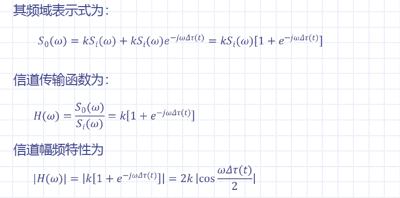

信道
0 引言
信道连接发送端和接收端的通信设备，功能是将信号从发送端传送到接收端。
调制信道 & 编码信道：

信道的分类：

1 无线信道
传播损耗：若将发射机输出功率与接收机输入功率之比定义为传播损耗，则可以表示为： $$ L_{fr}=\frac{P_T}{P_R}=\frac{16\pi^2d^2}{\lambda^2G_TG_R} $$ 其中\(L_{fr}\)为自由空间传播损耗，\(P_T\)为发射机输出功率，\(P_R\)为接收机输入功率，\(d\)为距离，\(\lambda\)为波长，\(G_T\)为发射天线增益，\(G_R\)为接收天线增益
2 有线信道
传输电信号的有线信道主要有三类：
- 明线：平行而相互绝缘的架空裸线线路（传输损耗低、易受天气影响、对外界噪声干扰敏感）
- 对称电缆：同一保护套内有许多对相互绝缘的双导线的传输媒质（传输损耗大于明线、传输特性比较稳定）
- 同轴电缆：由同轴的两个导体构成，外导体为金属丝网空管，内导体为金属芯线，中间填充介质，外导体接地起屏蔽作用
传输光信号的有线信道是光导纤维，简称光纤（损耗低、频带宽、线径细、重量轻、可弯曲半径小、不怕腐蚀、节省有色金属、不受电磁干扰影响等）
3 信道的数学模型
3.1 调制信道模型
通常在研究调制系统时信道指调制信道，只有在讨论信道编码时为编码信道
调制信道的共性：
- 有一对（或多对）输入端和一对（或多对）输出端
- 绝大多数的信道是线性的，满足线性叠加原理
- 信号通过信道具有固定的或时变的延迟时间
- 信道通过信道会受到固定或时变的损耗
- 即使没有信号输入，在信道的输出端仍可能有输出（噪声）
调制信道模型：\(r(t)=s_o(t)+n(t)=f[s_i(t)]+n(t)\)
- \(s_o(t)\)为调制信道对输入信号的响应输出波形，\(n(t)\)为加性噪声，\(f[s_i(t)]\)为输入的已调信号
- \(\begin{cases}s_o(t)=c(t)*s_i(t)=f[s_i(t)]\\S_o(\omega)=C(\omega)S_i(\omega)\end{cases}\)
- 加性干扰\(n(t)\)始终存在，乘性干扰\(C(\omega)\)与信号共存共失
信道特性\(C(\omega)\)通常是复杂的函数，可能包括各种线性失真、非线性失真、交调失真、衰落等。恒参信道，\(C(\omega)\)基本不随时间变化；随参信道，\(C(\omega)\)随时间随机变化。\(C(\omega)\)有三种典型形式：
-
常数形式（加性噪声信道数学模型）：\(r(t)=s_o(t)+n(t)=cs_i(t)+n(t)\)

-
信号频带范围内不是常数，但不随时间变化（带有加性噪声的线性滤波器）：\(r(t)=s_o(t)+n(t)=c(t)*s_i(t)+n(t)\)

-
随时间变化（带有加性噪声的线性时变滤波器）：\(r(t)=s_o(t)+n(t)=c(t,\tau)*s_i(t)+n(t)\)

3.2 编码信道模型
编码信道模型与调制信号模型不同，是一种数字信道或离散信道。输入时离散的时间信号，输出也是离散的时间信号，对信道的影响是将输入数字序列变成另一种输出数字序列。输入、输出之间的关系可以由一组转移概率矩阵表征
4 信道特性对信号传输的影响
4.1 恒参信道
恒参信道传输特性可以等效为线性时不变网络。
线性网络的传输特性可以用幅度频率特性和相位频率特性表征
理想恒参信道特性：\(H(\omega)=K_0e^{-j\omega t_d}\)，\(K_0\)为传输系数，\(t_d\)为时间延迟
-
\(\begin{cases}|H(\omega)|=K_0\\\phi(\omega)=\omega t_d\end{cases}\)，\(\tau(\omega)=\frac{d\phi(\omega)}{d\omega}=t_d\)
-
幅频特性、相频特性、群延迟-频率特性：

理想恒参信道的冲激响应为\(h(t)=K_0\delta(t-t_d)\)，若输入信号为\(s(t)\)，则输出信号为\(r(t)=K_0s(t-t_d)\)
理想恒参信道对信号传输的影响是：
- 对信号在幅度上产生固定的衰减、对信号在时间上产生固定的迟延 --> 无失真传输
- 整个频率范围其幅频特性为常数（或在信号频带范围之内为常数），相频特性为\(\omega\)的线性函数
幅频失真：信道的幅度-频率在信号频带范围内不是常数，则产生幅频失真
- 实际由信道的幅频特性不理想引起，又称为频率失真
- 幅频特性不理想会使通过信号产生失真。若在这种信道中传输数字信号，则会引起相邻数字信号波形在时间上相互重叠，即码间干扰
相频失真：信道的相频特性偏离线性关系时，使通过信道的信号产生相频失真（属于线性失真）
- 如果传输数字信号，相频失真同样会造成码间干扰，特别在传输速率较高时。
4.2 随参信道
随参信道特性可包括：对信号的衰减随时间而变化、传输的时延随时间而变化、多径传播。
随参信道比恒参信道复杂得多，对信号传输的影响也比恒参信道严重。
多径衰落与频率弥散：对于发送单一频率的正弦波\(s(t)=A\cos\omega_ct\)，多径信道有n条路经，每个路径有时变衰耗和时变传输时延且多径信号相互独立。最终接收端收到的合成波为\(r(t)=\sum_{i=1}^{n}a_i(t)\cos\omega_c[t-\tau_i(t)]\)，\(a_i\)为第i径信号到达接收端的振幅，\(\tau_i(t)\)为传输时延。
- 转换为相位形式：令\(\phi_i(t)=-\omega_c\tau_i(t)\)，则\(r(t)=X(t)\cos\omega_ct-Y(t)\sin\omega_ct\)，其中\(\begin{cases}X(t)=\sum_{i=1}^{n}a_i(t)\cos\phi_i(t)\\Y(t)=\sum_{i=1}^{n}a_i(t)\sin\phi_i(t)\end{cases}\)。当n足够大时，\(X(t)\)和\(Y(t)\)趋于正态分布
- 转换为包络相位形式：\(r(t)=V(t)\cos[\omega_ct+\phi(t)]\)。包络的一维分布服从瑞利分布，相位的一维分布服从均匀分布。对于载波来说\(V(t)\)和\(\phi(t)\)是慢变化随机过程，因此\(r(t)\)可看成一个窄带随机过程
- 多径传播使单一频率的正弦信号变成了包络和相位受调制的窄带信号，这种信号称为衰落信号，即多径传播使信号产生瑞利型衰落
- 多径传播使单一谱线变成了窄带频谱，即多径传播引起了频率弥散
频率选择性衰落与相关带宽：当发送信号具有一定频带宽度的信号时，多径传播除了会使信号产生瑞利型衰落外，还会产生频率选择性衰落



信道幅频特性：信号通过这种传输特性的信道时频谱将失真。对于一般的多径传播，信道的传输特性将比两条路径传输特性复杂得多，但同样存在频率选择性衰落现象。

5 信道中的噪声
加性噪声：与信号相互独立，始终存在，且只能采取措施减小加性噪声的影响而不能完全消除
- 来源：人为噪声、自然噪声、内部噪声
单频噪声：连续波干扰，可以通过设计系统避免
脉冲噪声：时间上无规则的突发脉冲波形。由于脉冲很窄，所以频谱很宽，可以通过选择合适的工作频率、远离脉冲源等措施减小和避免